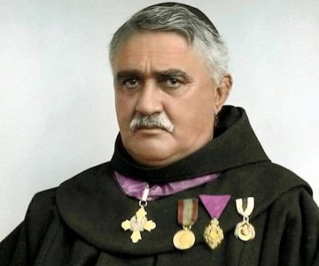

Gjergj Fishta (1871-1940)

Gjergj Fishta was an Albanian Franciscan friar, poet, educator, politician, rilindas, translator and writer. He is regarded as one of the most influential Albanian writers of the 20th century due to his epic masterpiece Lahuta e Malcís and the editor of two of the most autoritative magazines after Albania's independence, Posta e Shypniës and Hylli i Dritës.
Notably being the chairman of the commission of the Congress of Monastir, which sanctioned the Albanian alphabet. He was part of the Albanian delegation to the Versailles Conference, 1919. In 1921 he was a member and became the deputy chairman of the Albanian parliament, later on in the '20s and the '30s he was among the most influential cultural and literary figures in Albania.
After the communist regime came to power, his literary oeuvre has been taken out of circulation, and it stayed so until the fall of communism.
| Literary works |
Year of publication |
| Lahuta e Malcis |
1902 |
| Anzat e Parnasit |
1907 |
| Vallja e Parrizit |
1909 |
| Shqiptari i qytetnuem |
1911 |
| Vëllaznia |
1912 |
| Juda Makabe |
1914 |
| Gomari i Babatasit |
1923 |
| Mrizi i Zanave |
1924 |